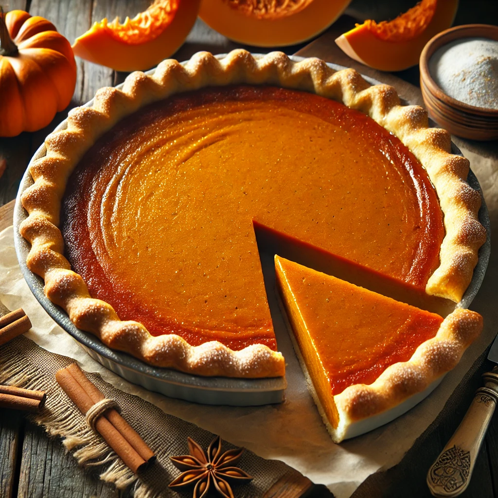

Recipe list
Easy Pumpkin Pie Recipe

Classic Homemade Pumpkin Pie
Pumpkin pie is a beloved autumn dessert, known for its smooth, spiced filling and flaky, golden crust.
Made with real pumpkin puree, cinnamon, nutmeg, and a touch of vanilla, this pie offers the perfect balance of sweetness and warmth.
Its creamy texture and rich flavor make it a favorite treat for family gatherings, holiday dinners, or cozy evenings with a cup of tea.
The comforting aroma of baked pumpkin and spices fills the kitchen, making every bite a true taste of fall.
Whether served with whipped cream, a sprinkle of cinnamon, or a scoop of vanilla ice cream, pumpkin pie is
a timeless classic that brings warmth and joy to any table.
Ingredients:
- 1 ½ cups (360g) pumpkin puree
- 1 cup (200g) sugar
- 2 eggs
- 1 cup (240ml) heavy cream or milk
- 1 ½ cups (190g) all-purpose flour
- 1 tsp baking powder
- ½ tsp baking soda
- 1 tsp cinnamon
- ½ tsp nutmeg
- ½ tsp salt
- 1 tsp vanilla extract (optional)
- ½ cup (115g) melted butter
- Butter (for greasing the pan)
Instructions:
- Preheat the oven to 350°F (175°C).
- Prepare the batter: In a large bowl, whisk eggs and sugar.
- Add dry ingredients: Sift in the flour, baking powder, baking soda, salt, cinnamon, and nutmeg. Stir until combined.
- Incorporate liquids: Add heavy cream (or milk), melted butter, and vanilla extract. Mix until smooth.
- Pour into the pan and spread the batter evenly.
- Bake for 40-50 minutes or until a toothpick inserted in the center comes out clean.
- Cool & Serve: Let the pie cool before slicing. Enjoy with whipped cream or a sprinkle of cinnamon!
Tip: You can add crushed nuts or raisins for extra texture and flavor.